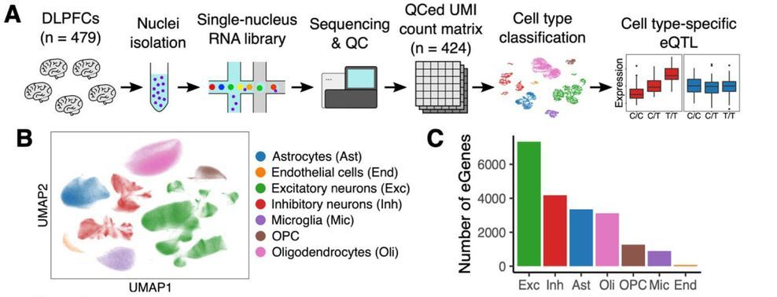

Today I read the preprint Cell-subtype specific effects of genetic variation in the aging and Alzheimer cortex by Masahi Fujita and co-authors, published on biorXiv (Fujita et al., n.d.). The authors generated the largest brain single-nuclei RNA-seq dataset to date (that I am aware of), collecting data on dorsolateral prefrontal cortex (DLPFC) samples of 424 individuals from the ROS/MAP cohort.

This large sample size enabled them to assess the effect of genetic variation (e.g. single-nucleotide variants) on gene expression - one cell type at a time. The authors created pseudo-bulk gene expression profiles for each patient for 7 cell types and 81 cell subtypes.
Because neurons are highly abundant in the DLPFC, the largest number of nuclei originated from neurons, and the statistical power to detect eQTLs was lower in rarer cell types (e.g. microglia). This highlights the potential of enrichment methods, e.g. by fluorescent activate nuclei sorting (FANS) approached. (See e.g. (Kamath et al. 2022), who specifically enriched dopaminergic neurons or (Sadick et al. 2022), who enriched astrocytes and oligodendrocytes.)
Fujita et al were able to identify ~ 10,000 eGenes1, about half of which were shared across cell types. For example, they identified a novel eQTL (rs128648) for the APOE gene specifically in microglia.
Having identified novel eQTL relationships in vivo, the authors then used bulk RNA-seq measurements from a panel of induced pluripotent stem cells that had been differentiated either into neurons (iNeurons) or astrocytes (iAstrocytes) to test whether they could also observe the variants’ effects in vitro.
Despite a relatively small sample size, a subset of eQTLs were replicated. But the the authors also point out unexpected discrepancies in the MAPT locus where they observed variant effects in the opposite direction from what they had observed by snRNA-seq.
Gene expression was significantly heritable in most cell types (except for those from which only small numbers of nuclei had been sampled). This allowed the authors to use their snRNA-seq dataset to impute cell type specific gene expression for large GWAS studies, e.g. for Alzheimer’s Disease, ALS, Parkinson’s Disease, and schizophrenia. This TWAS analysis detected e.g. 48 novel loci associated with AD in microglia, 22 of which had not been implicated previously.
In summary, this work by Fujita et al is an impressive achievement, demonstrating that single-cell/single-nuclei approaches have now become sufficiently scalable to power human genetics analyses.
The authors have already made the raw data for their study available on the AD Knowledge Portal. Thank you for sharing your data!

This work is licensed under a Creative Commons Attribution 4.0 International License.
References
Footnotes
Gene whose expression was significantly associated with one or more genetic variants (FDR < 5%)↩︎